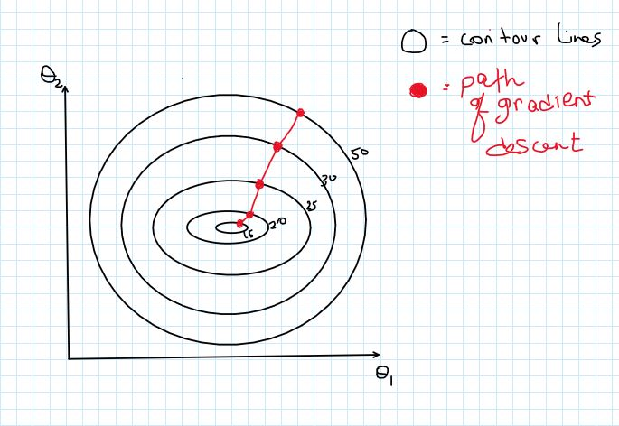
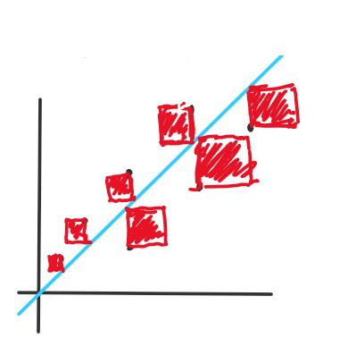

Gradient Descent
Our objective with the gradient descent algorithm is to reach a local
minimum in our cost function by tweaking the paramters. While there are
several additional improvements and variations of gradient descent like
gradient boosting being implemented, the basic algorithm works well in
most cases.
Intuition
The cost function is a function of the weights and biases of our neural
network that measures performace. In the following example, the ellipses
are contour lines of an arbitrary cost function. If you are not familiar
with what contour lines are, the number next to each line represents the
value of the function at every point on that line. So you can think of
this graph as getting higher and higher as you go out from the center
like a bowl.

You can see here that we want to tweak \(\theta_1\) and \(\theta_2\) so
that we reach a local minimum. If we take the gradient at a point in the
graph (which is the slope of the red line), it will point us in the
direction of steepest
ascent at that point. Therefore,
in order to reduce our error, we travel in the direction of the negative
gradient, aka
steepest descent. So say we start off
with some random weights \(\theta_1\) and \(\theta_2\). Each iteration
of gradient descent will be as follows:
$$\theta := \theta - \frac{dJ}{d\theta}$$ So every iteration or "epoch",
we decrement \(\theta\) by the value of the gradient at that point with
respect to \(\theta\) (\(:=\) is the assignment operator).
In Practice
Learning Rate
Usually, when we are performing gradient descent, directly subtracting
the gradient is not a good idea because it can be too large or too
small(more often the former). Therefore, a "learning rate" is used to
scale the gradient and to obtain a better control of the learning
process. We use a hyper parameter, \(\alpha \), for this learning rate.
With this in practice, the gradient descent algorithm would look like
this:
$$ \theta := \theta - \alpha(\frac{dJ}{d\theta})$$ where \(\alpha \) is
a hyperparameter that we pick.
Cost Function
Now that we have a basic grasp of gradient descent, the next task is to
pick the
right cost function. In our
forward pass example, we designed a
neural net to predict a continous outcome. We can use the same cost
function that the linear regression algorithm uses: Mean Squared Error
or MSE. Simply put, we want our neural net to make an approximation of
the labels so we can use MSE here. If our task was categorization, the
process is slightly more complex.
Mean Squared Error:
$$\frac{1}{M} \sum_{i=0}^M(y^{(i)} - a^{(L)}_i)^2$$
Let's break this down: 'M' is the number of samples, \(a^{(L)}_i\) is
the output of the neural network for the \(i\)-th sample, \(y^{(i)}\) is
the \(i\)-th label. So we are squaring the difference between the
prediction and values and taking the average over all samples. Why do we
square it? Because if it wasnt, we would see errors cancelling out. So
squaring it makes sure error is always positive for every sample.
2D visual representation:
This is a linear regression function, but it still does the job in
demosntrating how error works. The red squares in this image
represent the error from each data sample. The blue line is the
prediction function, and the black dots represent each data sample.
To find the area of each square, we square the difference between
the label and the prediction. The areas of these squares are
averaged to find the error of this model.

Derivative of the Cost Function
The end goal of this is to tweak our parameters so that we can find the
perfect amount that we need to "turn the knob" on each parameter. So in
order to find \(\frac{dJ}{d\theta}\), we have to apply the chain rule as
follows:
$$ \frac{dJ}{dW} = \frac{dJ}{da^{(L)}} * \frac{da^{(L)}}{dz} *
\frac{dz}{d\theta}$$
This derivative calculation is for a single layer perceptron and to
figure out the weight parameters.
Let's go back to the neural network we used in the other blog:
# layer 1
Z1 = W1 @ X + B1
A1 = sigmoid(Z1)
# layer 2
Z2 = W2 @ A1 + B2
A2 = sigmoid(Z2)
$$ \displaylines{J(\theta) = \frac{1}{M}\sum_{i=0}^M(A_2 - y)^2 \\ \\
\frac{dJ}{dW_2} = \frac{dJ}{dA_2} * \frac{dA_2}{dZ_2} *
\frac{dZ_2}{dW_2}\\
\frac{dJ}{dB_2} = \frac{dJ}{dA_2} * \frac{dA_2}{dZ_2} *
\frac{dZ_2}{dB_2}\\
\\ \frac{dJ}{dW_1} = \frac{dJ}{dA_2} * \frac{dA_2}{dZ_2} *
\frac{dZ_2}{dA_1} * \frac{dA_1}{dZ_1} * \frac{dZ_1}{dW_1}\\
\frac{dJ}{dB_1} = \frac{dJ}{dA_2} * \frac{dA_2}{dZ_2} *
\frac{dZ_2}{dA_1} * \frac{dA_1}{dZ_1} * \frac{dZ_1}{dB_1}} $$
Now, let's compute each derivative. I am going to leave out the
summation notation for simplicity purposes.
First set of derivatives
$$ \displaylines{\frac{dJ}{dA_2} = 2(A_2 - y)\\
\frac{dA_2}{dZ_2} = A_2(1 - A_2)\longrightarrow\textrm{simplified} \\
\frac{dZ_2}{dW_2} = A_1 \\
\frac{dZ_2}{dB_2} = 1
} $$
Second set of derivatives
Some derivatives we need are already calculated above.
$$ \displaylines{\frac{dZ_2}{dA_1} = W2 \\
\frac{dA_1}{dZ_1} = A_1(1 - A_1) \\
\frac{dZ_1}{dW_1} = X \\
\frac{dZ_1}{dB_1} = 1 }$$ Now, you can plug in these values to get
\(\frac{dJ}{dW_2}\),\(\frac{dJ}{dB_2}\),\(\frac{dJ}{dW_1}\),\(\frac{dJ}{dB_1}\).
dA2 = 2(A2 - y)
dZ2 = W1.T.dot(dA2) * d_sigmoid(Z2)
dW2 = dZ2.dot(A1.T)
dB2 = np.sum(dZ2, axis=1, keepdims=True)
dZ1 = W2.T.dot(dZ2) * d_sigmoid(Z1)
dW1 = dZ1.dot(X.T)
dB1 = np.sum(dZ1, axis=1, keepdims=True)
W1 -= dW1 * lr
B1 -= dB1 * lr
W2 -= dW2 * lr
B2 -= dB2 * lr